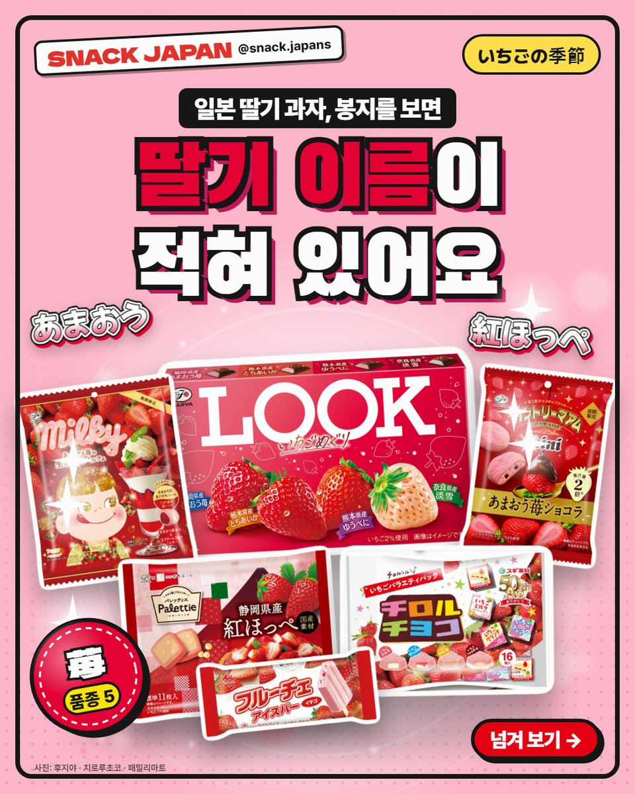
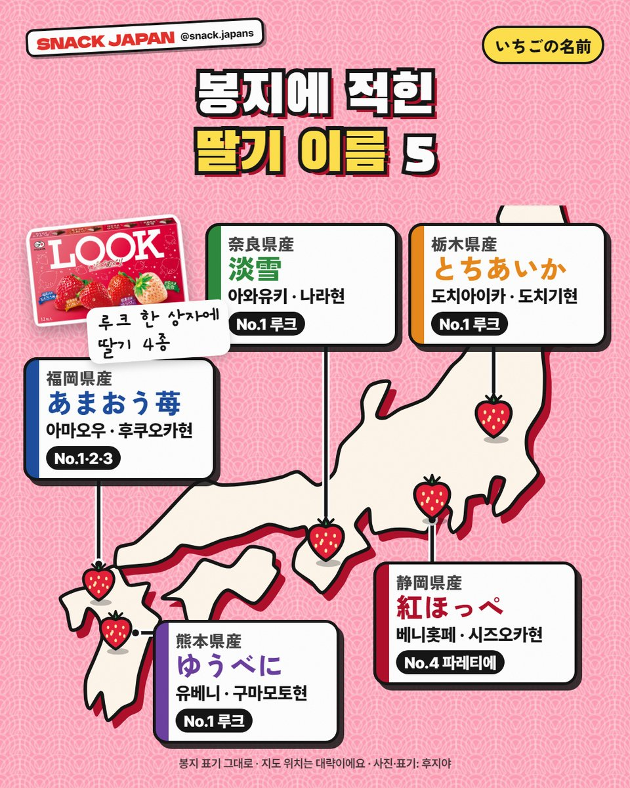
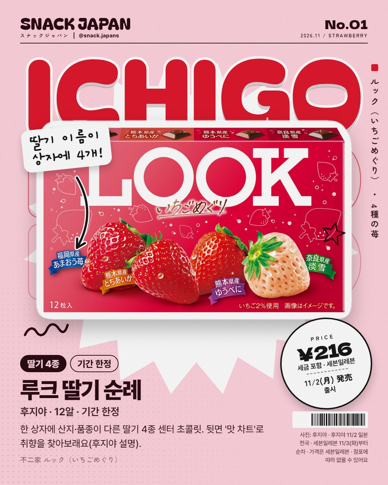
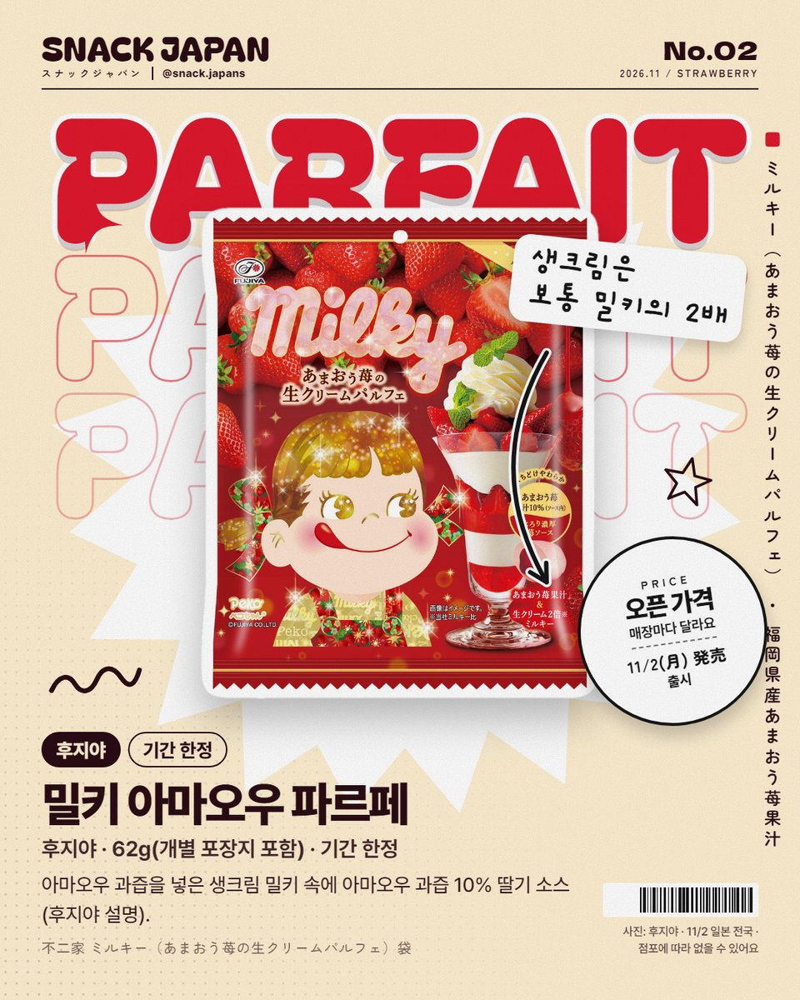
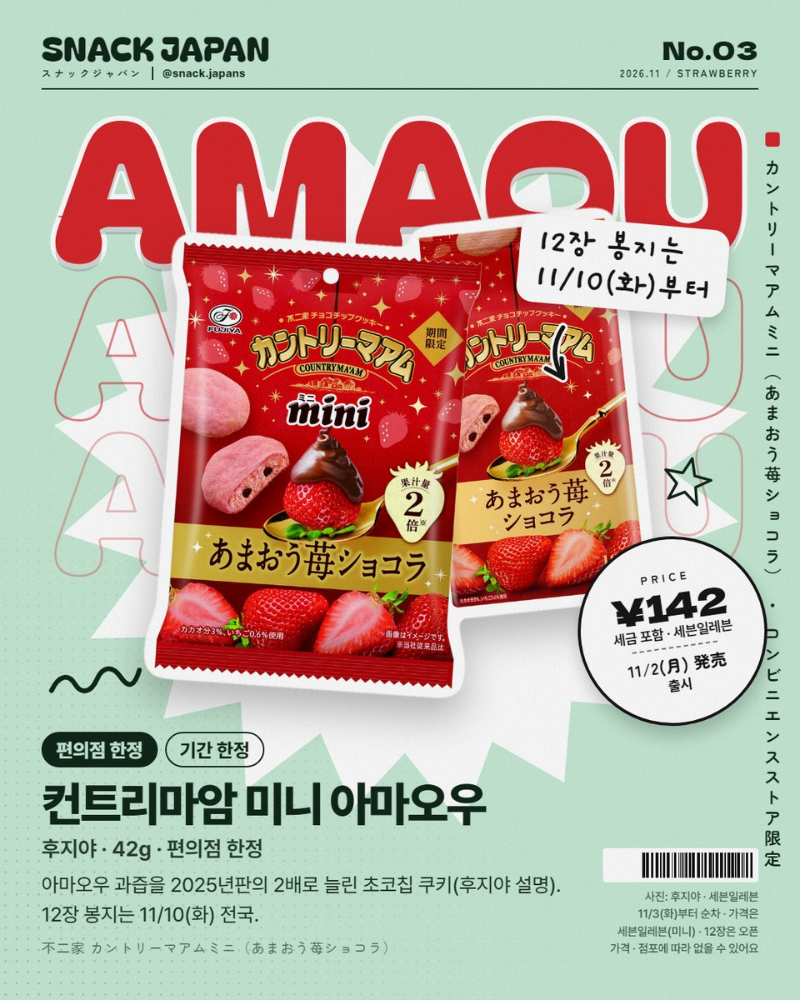
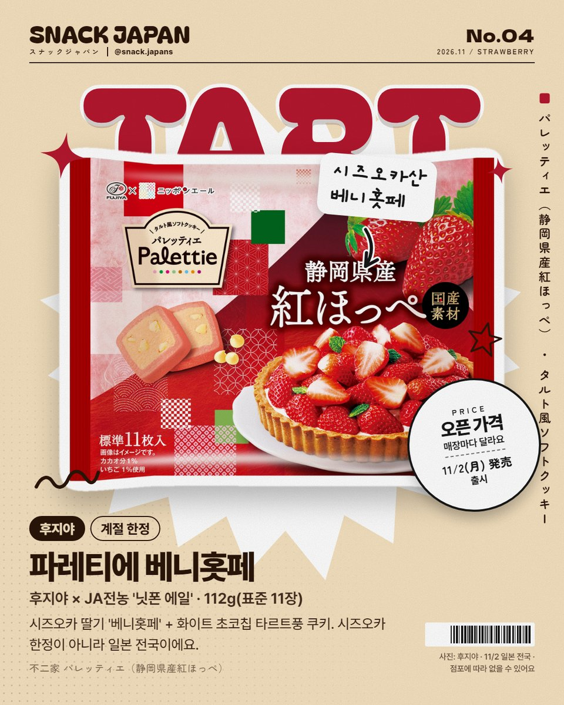
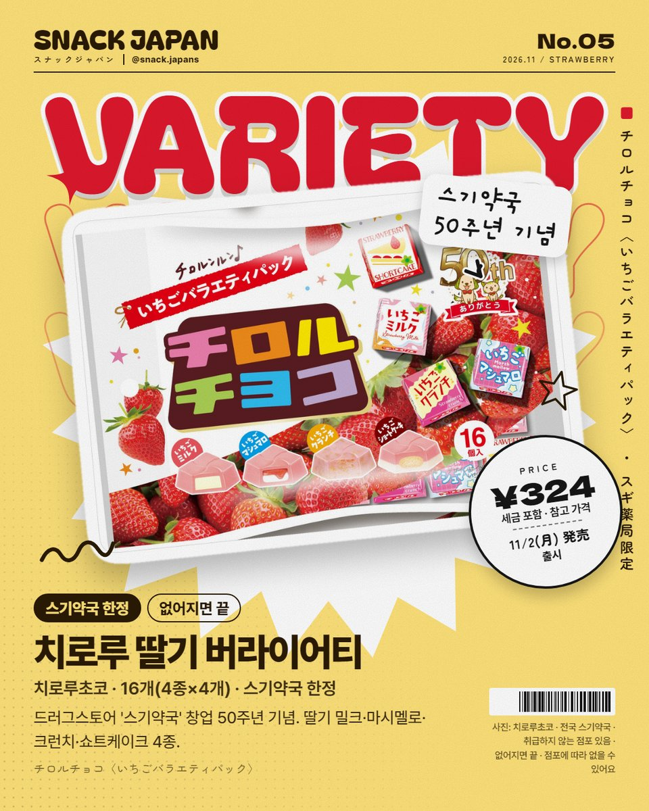
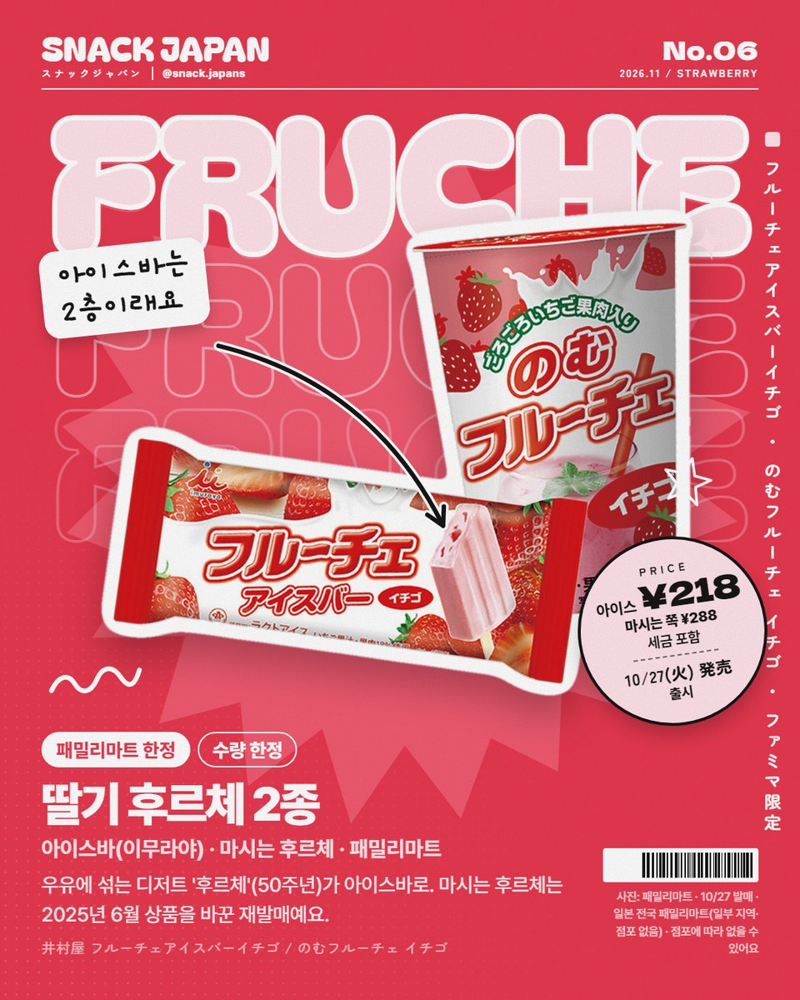
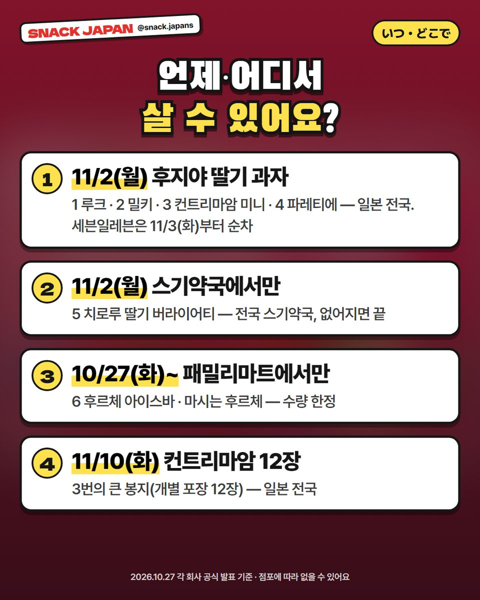

일본 딸기 과자 신상 6가지, 봉지에 적힌 딸기 이름 아마오우·도치아이카·유베니·아와유키·베니홋페
11월 첫 주, 일본에 딸기 과자가 한꺼번에 나왔어요! 루크 딸기 순례부터 스기약국 한정 치로루, 패밀리마트 후르체까지 — 봉지 속 딸기 이름도 같이 읽어 봐요.
일본 딸기 과자 시즌이 왔어요! 🍓
11월 첫 주, 딸기 과자가 한꺼번에 나왔는데
봉지를 보면 딸기 이름(산지·품종)이 적혀 있더라고요.
딸기 이름까지 같이 읽어 볼게요!


1. 봉지에 적힌 딸기 이름 5
이번 딸기 과자 봉지에 적힌 이름을 모아 보면 이래요 (봉지 표기 그대로).
- あまおう 아마오우: 후쿠오카현
- とちあいか 도치아이카: 도치기현
- ゆうべに 유베니: 구마모토현
- 淡雪 아와유키: 나라현
- 紅ほっぺ 베니홋페: 시즈오카현

2. 루크 딸기 순례 (후지야)
한 상자에 산지·품종이 다른 딸기 4종 센터 초콜릿이 들어 있어요.
상자에 아마오우·도치아이카·유베니·아와유키 이름이 적혀 있어요.
뒷면 '맛 차트'로 취향을 찾아보래요 (후지야 설명).
- 출시: 11월 2일(월), 일본 전국 / 세븐일레븐은 11월 3일(화)부터 순차
- 12알, 기간 한정
- 일본 이름: ルック（いちごめぐり）

3. 밀키 아마오우 딸기 생크림 파르페 (후지야)
후쿠오카산 아마오우 과즙을 넣은 생크림 밀키 속에
아마오우 과즙 10% 딸기 소스가 들었대요 (후지야 설명).
생크림은 보통 밀키의 2배래요.
- 출시: 11월 2일(월), 일본 전국
- 62g(개별 포장지 포함), 기간 한정
- 일본 이름: ミルキー（あまおう苺の生クリームパルフェ）袋

4. 컨트리마암 미니 아마오우 딸기 쇼콜라 (후지야)
아마오우 과즙을 2025년판의 2배로 늘린 초코칩 쿠키래요 (후지야 설명).
- 미니(42g): 11월 2일(월), 편의점 한정 / 세븐일레븐은 11월 3일(화)부터 순차
- 12장 봉지(개별 포장): 11월 10일(화), 일본 전국
- 일본 이름: カントリーマアムミニ（あまおう苺ショコラ）

5. 파레티에 시즈오카산 베니홋페 (후지야)
시즈오카 딸기 '베니홋페'에 화이트 초코칩을 넣은 타르트풍 쿠키예요.
JA전농 '닛폰 에일'과 함께 만들었어요.
- 출시: 11월 2일(월), 일본 전국 (시즈오카 한정 아니에요)
- 112g(표준 11장), 계절 한정
- 일본 이름: パレッティエ（静岡県産紅ほっぺ）

6. 치로루초코 딸기 버라이어티 팩 (스기약국 한정)
드러그스토어 '스기약국' 창업 50주년 기념 팩이에요.
딸기 밀크·딸기 마시멜로·딸기 크런치·딸기 쇼트케이크 4종이 4개씩, 16개!
- 출시: 11월 2일(월)
- 파는 곳: 전국 스기약국 (취급하지 않는 점포 있음, 없어지면 끝)
- 일본 이름: チロルチョコ〈いちごバラエティパック〉

7. 후르체 아이스바 딸기 · 마시는 후르체 딸기 (패밀리마트)
우유에 섞어 만드는 하우스식품 디저트 '후르체'(올해 50주년)가 아이스바로 나왔어요.
아이스바는 2층이래요: 안은 후르체 베이스+딸기 과즙·과육 우유 아이스, 겉은 딸기우유 아이스 (패밀리마트 설명).
마시는 후르체는 2025년 6월에 나온 상품을 생크림을 넣어 바꾼 재발매예요.
- 출시: 10월 27일(화)부터
- 파는 곳: 일본 전국 패밀리마트 (패밀리마트 한정·수량 한정, 일부 지역·점포 없음)
- 일본 이름: 井村屋 フルーチェアイスバーイチゴ / のむフルーチェ イチゴ

총평
- 가격: 사진 카드에 정리해 뒀어요
- 기준: 10월 27일 각 회사 공식 발표
- 참고: 출시일·판매 점포는 지역·매장마다 달라요
- 추천: 딸기 과자 좋아하는 분, 봉지에 적힌 딸기 이름까지 궁금한 분
6가지 중에 하나만 고른다면 몇 번이에요? 🍓